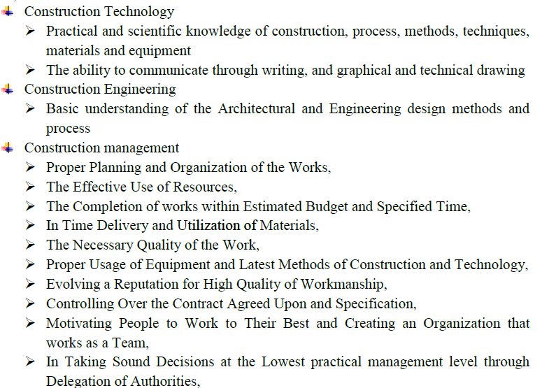

Construction Technology and Management Blog
The Objective of this B.Sc. program is to produce outstanding construction technology and management
graduates who have been prepared to become technological, managerial and public service leaders
capable of understanding the social and environmental challenges that face the country, and who
will be in a position to make a meaningful contribution to both national social and economic
growth and development as well as being able to respond to, and benefit from, the impact of global
change. The departement and the staff are committed to creating a learning environment
that provides a level of knowledge and competency in these areas, through an innovative program of
study, supported by a capability in information technology use, coupled with a capacity to integrate
the key social and environmental issues facing the country.
This program is aimed primarily at training managing engineers required for managing constructing
projects with efficient and effective management system, Administer contracts, Conduct researches to
identify real problems on site pertaining to construction management, methods & materials, and find
better solutions.
